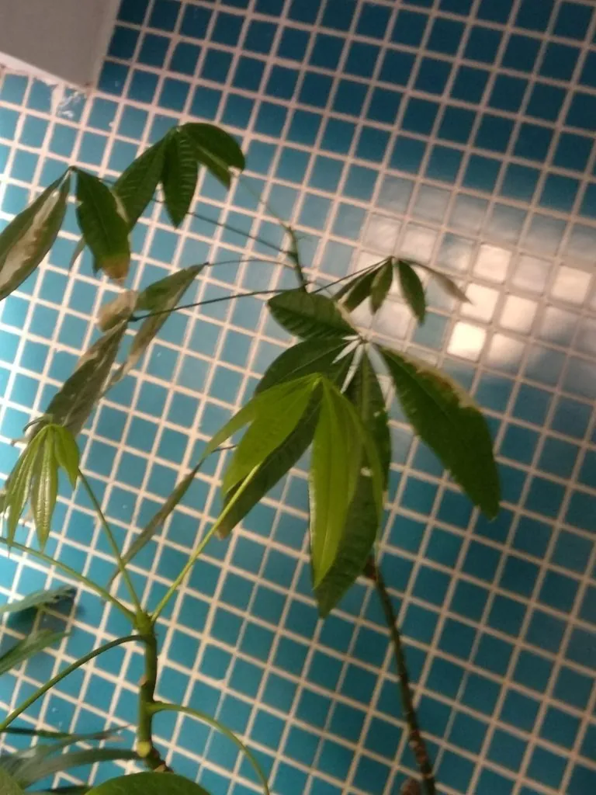

多肉植物 · 植物界
发财树 Pachira macrocarpa

锦葵科瓜栗属常绿乔木，掌状复叶、树干基部膨大，常编成辫状盆栽，寓意招财进宝，原产中美洲，是常见室内观叶植物。
- 分类
- 门被子植物门纲木兰纲目锦葵目科锦葵科属瓜栗属
- 栖息环境
- 中美洲热带雨林的林下与河岸，喜温暖湿润、半阴
- 地理分布
- 原产中美洲及南美洲北部，世界各地盆栽，中国南北常见
- 保护级别
- 暂无评估
物种志
发财树为锦葵科瓜栗属的常绿乔木，野生植株高可达 10–20 米，盆栽常控制在 1–2 米。树干基部膨大，树皮绿色，幼树茎干柔韧，常被编成辫状栽培。掌状复叶互生，小叶 5–9 枚，倒卵形，长 10–20 厘米，革质光亮。花大，白色或淡黄色，雄蕊多数，花期夏季；果实为蒴果，种子可食。
发财树原产中美洲和南美洲北部的热带雨林，喜温暖湿润、半阴和通风良好的环境，怕强光暴晒和积水。它株形美观、叶片常绿，因名称寓意招财进宝而成为常见的室内观叶植物，常用于办公室和商场摆放。栽培用疏松透气的腐殖质土，浇水见干见湿，冬季保持 10℃ 以上；繁殖以播种和扦插为主。
形态与习性
- 株高野生可达 10–20 米，盆栽 1–2 米
- 叶片掌状复叶，小叶 5–9 枚
- 花期夏季，花大、白色或淡黄色
- 光照喜半阴散射光，忌强光暴晒
- 水分见干见湿，忌积水
- 土壤疏松透气的腐殖质土
- 繁殖播种、扦插
- 主要用途室内观叶、办公室绿化
趣味知识
- 发财树的树干基部膨大，能储存水分，因此耐短期干旱。
- 市售发财树常把几株幼树编成辫状，造型寓意招财。
- 它原产中美洲热带雨林，怕强光暴晒和盆土积水。